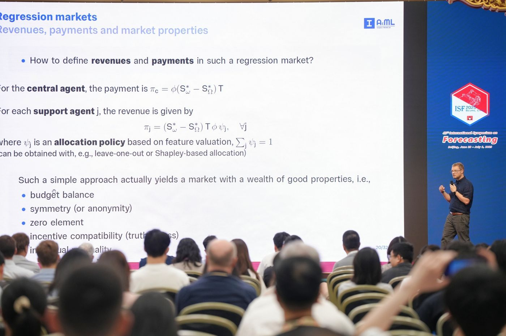
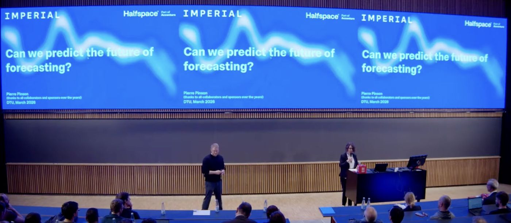
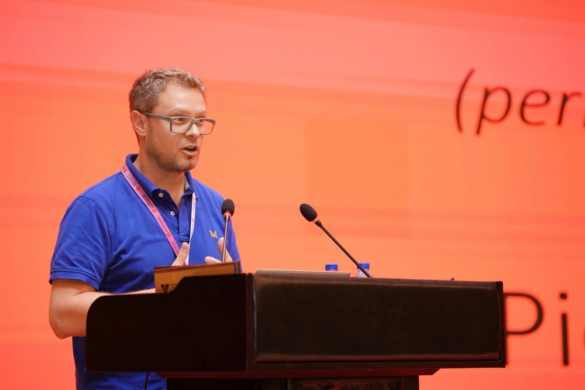
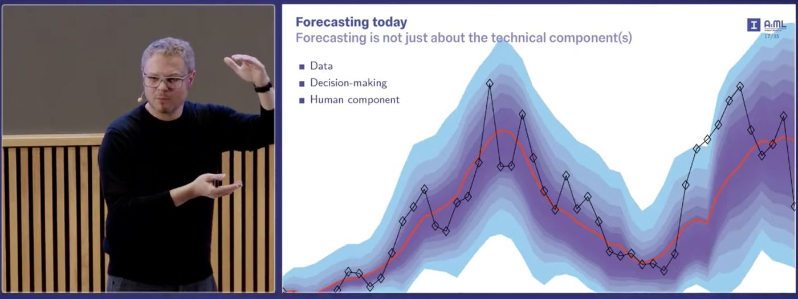

Can we predict the future of forecasting?
Where forecasting has come from, what AI and foundation models change, and what they do not: uncertainty, verification and the value of forecasts for decisions.
Speaking
I speak to research communities, energy and trading companies, policy-makers and the wider public about how to make good decisions under uncertainty, and what that means for the energy transition. Talks draw on more than 20 years of research and on practice in industry, from award-winning forecasting at Molslinjen to energy trading at inCommodities.
The DTU Ørsted Lecture, March 2026: a yearly public lecture at the Technical University of Denmark, often given by Nobel laureates. It covers where forecasting comes from, what AI is changing, and why the value of a forecast lies in the decisions it supports.
Each talk is tailored to its audience, from a technical keynote to a briefing for a board. Choose an audience to see what fits best.
Where forecasting has come from, what AI and foundation models change, and what they do not: uncertainty, verification and the value of forecasts for decisions.
Why markets designed for controllable power plants must be rethought for renewables, flexible consumers and data, and what fit-for-purpose markets could look like.
Background: my take on future electricity marketsHow collaborative analytics, data markets and privacy-preserving learning can unlock the value of data spread across competitors, and how to pay contributors fairly.
Background: data and analytics marketsWhat it takes to turn forecasting, optimisation and dynamic pricing into everyday operations, told through the INFORMS Edelman Award-winning work at Molslinjen.
The Edelman storyWhy point forecasts are not enough for wind and solar power, how to produce and verify probabilistic forecasts, and how traders and system operators use them.
Background: probabilistic forecastingA broad view of how data, people and markets interact in decarbonising our energy systems, first given as my inaugural lecture at Imperial College London.
No talk matches this audience yet: get in touch and we will shape one together.
More recordings of talks, and a podcast on forecasting.




For conferences and company events, typically 30 to 60 minutes with questions.
Discussions on forecasting, AI, energy markets and the energy transition.
Focused sessions for leadership teams and boards on what forecasting, data and AI can bring to their business.
Half-day or full-day sessions on probabilistic forecasting, trading under uncertainty or electricity markets, drawing on my open course.
Tell me about your event, its date and place (or whether it is online), the audience and the format you have in mind. I am based in Aarhus, Denmark, travel regularly across Europe, and also speak online.
Invite me to speak